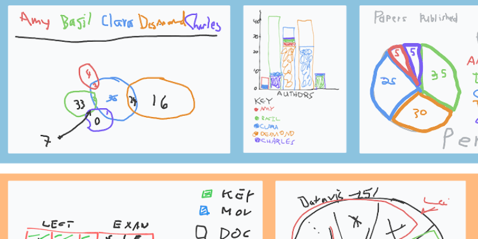
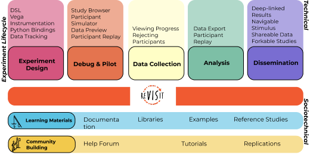
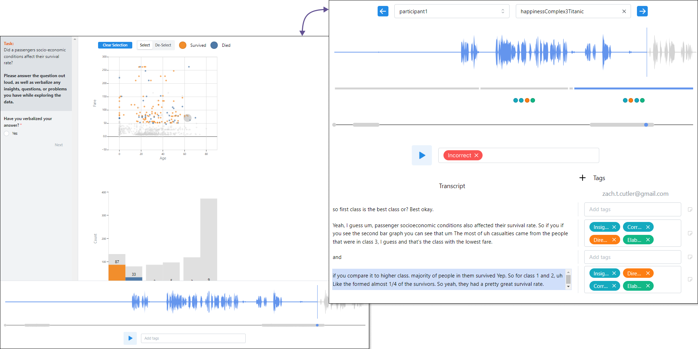
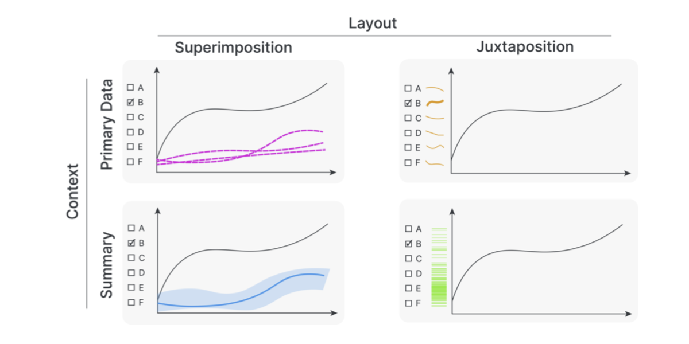
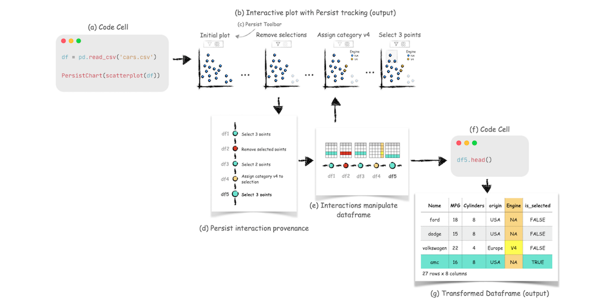
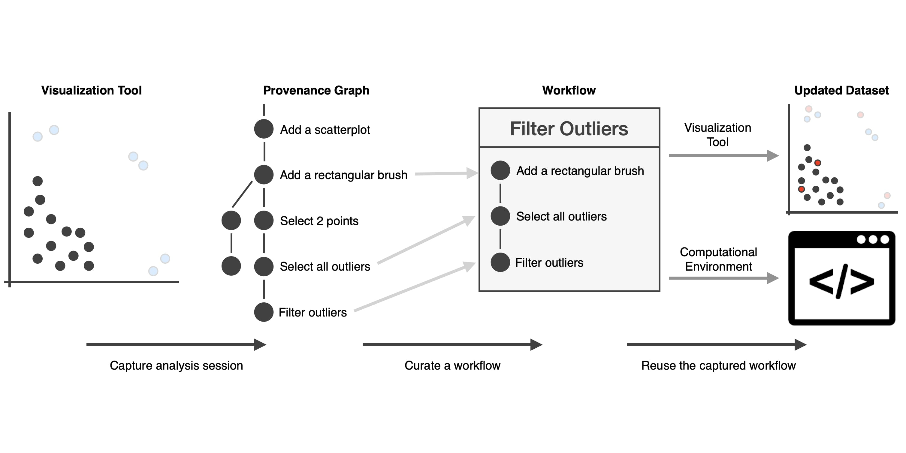
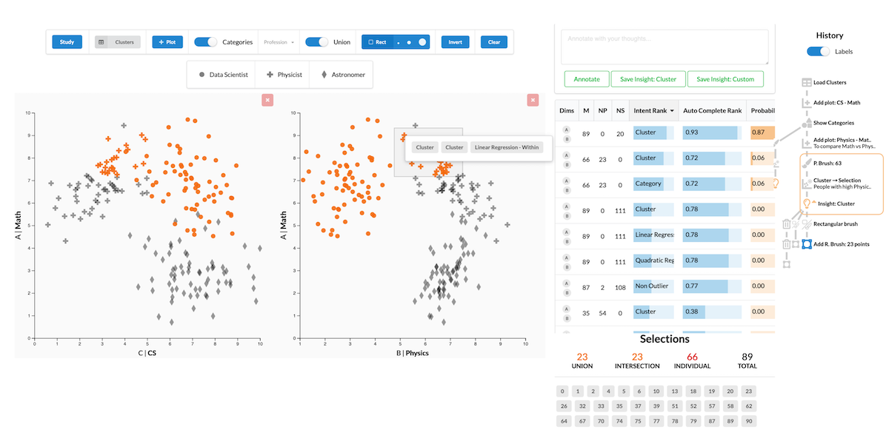
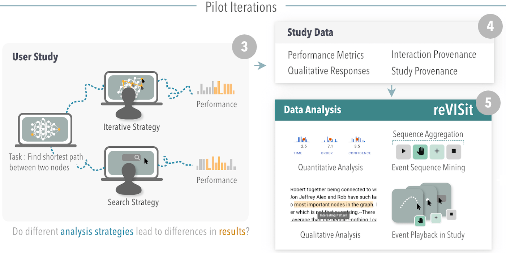
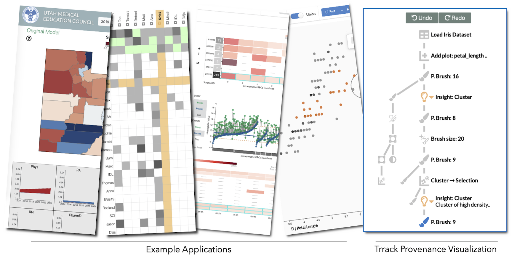

I’m a fourth year PhD student working with Alexander Lex and Andrew McNutt as part of the Visualization Design Lab at the University of Utah. My current research is focused on making user studies easier to design, run, and analyze for the visualization community. I am part of a larger team which develops and maintains reVISit, our framework for creating user studies. I am also interested in empirical research focusing on visualization literacy, trust in visualization, belief and belief elicitation, and misinformation.
I have previously worked on provenance in visualization systems, and helped develop and currently maintain both Trrack and Trrack-Vis

Zach Cutler, Lily W Ge, Matthew Kay, Lane Harrison, Andrew McNutt, Alexander Lex
IEEE Transactions on Visualization and Computer Graphics (VIS), 2026

Zach Cutler, Jack Wilburn, Hilson Shrestha, Yiren Ding, Brian Bollen, Khandaker Abrar Nadib, Tingying He, Andrew McNutt, Lane Harrison, Alexander Lex
IEEE Transactions on Visualization and Computer Graphics (VIS), 2025
IEEE VIS 2025 Best Paper Award

Zach Cutler, Lane Harrison, Carolina Nobre, Alexander Lex
SIGCHI Conference on Human Factors in Computing Systems (CHI), 2025

Maxim Lisnic, Zach Cutler, Marina Kogan, Alexander Lex
SIGCHI Conference on Human Factors in Computing Systems (CHI), 2025

Kiran Gadhave, Zach Cutler, Alexander Lex
Computer Graphics Forum (EuroVis), 2024

Kiran Gadhave, Zach Cutler, Alexander Lex
Computer Graphics Forum (EuroVis), 2022

Kiran Gadhave, Jochen Görtler, Zach Cutler, Carolina Nobre, Oliver Deussen, Miriah Meyer, Jeff Phillips, Alexander Lex
Information Visualization, 2021

Carolina Nobre, Dylan Wootton, Zach Cutler, Lane Harrison, Hanspeter Pfister, Alexander Lex
SIGCHI Conference on Human Factors in Computing Systems (CHI), 2021

Zach Cutler, Kiran Gadhave, Alexander Lex
IEEE Visualization Conference (VIS), 2020